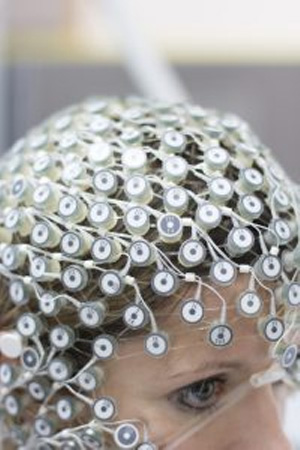
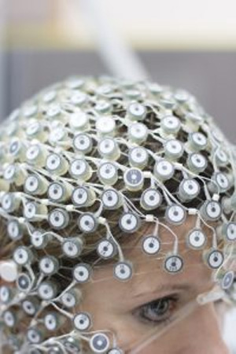

Les patients traités à l’aide de cette machine sont entièrement paralysés, ils ont même parfois l’impossibilité de cligner des yeux, ou de respirer, et sont donc sous assistance respiratoire.
On leur a adressé des questions fermées (les réponses admises étant donc ‘oui’ ou ‘non’) , et lorsqu’ils pensaient leur réponses on a, à l’aide d’un ordinateur et des d’appareils de mesures, observé la quantité d’oxygène dans le cerveau, et sa fluctuation. On a en effet observé que cette dernière variait suivant la réponse. A noter que cet appareil ne nécessite pas de s’introduire dans le cerveau, seulement d’électrodes et autres instruments (électroencéphalogramme, spectroscope, ...).
On connaissait donc alors à quoi correspondait un ‘oui’ et un ‘non’, et on leur a posé des questions personnelles auxquelles les patients avaient la réponse (par exemple le nom de la mère). 70 % environ des réponses étaient correctes. Le système peut donc probablement encore être perfectionné, mais montre qu’il y a de l’espoir pour ces gens, il faudra à présent multiplier le nombre initial de patients (4).
Les résultats enregistrés furent alors d’une grande importance, bousculant plusieurs théories antérieures stipulant que les personnes intégralement paralysées étaient incapables de communiquer. Il est également d’intérêt que malgré ce à quoi on pourrai s’attendre, les patients ont tous déclaré être heureux, plusieurs semaines d’affilées lorsqu’on leur posait la question. Il souhaitent donc toujours vivre, malgré leur état de dépendance extrême, tant qu’ils sont bien traités.
D’après le Professeur Niels Birbaumer, qui a dirigé l’expérience, l’objectif, au long terme, est de restaurer totalement le mouvement.
S O U R C E S
| Article Science Daily | Article Pourquoi Docteur | Images Wyss Center |